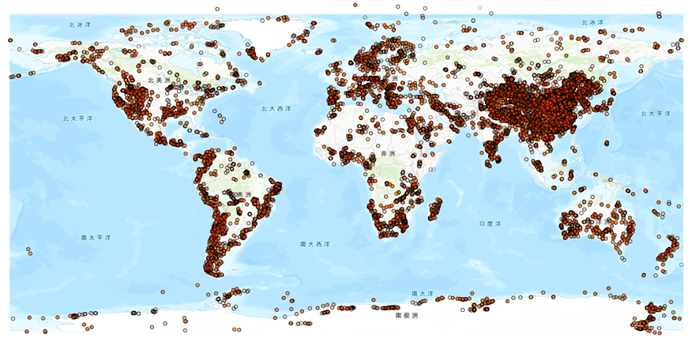
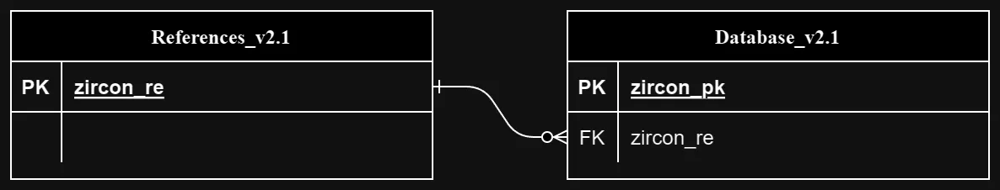

DDE 入库整理数据集
罗列古地理工作组已整理入库的各类地球化学数据集，并将其整理为数据集介绍。
Zircon_Wu_2023 锆石数据库
全球大陆地壳锆石U-Th-Pb地质年代学数据库，包含 1,351,483 行同位素数据。
数据来源
来源机构：北京大学，Peking University。
数据提供者：Wu Yujing
数据更新时间：2023年1月1日。
数据集介绍
数据分布示意
源数据包含数据和数据参考文献两部分，ER关系图如下：
其中设置入库的同位素数据表主键为zircon_pk，参考文献数据表主键为：zircon_re。
将同位素数据表的zircon_re列外键约束至参考文献数据表主键为：zircon_re
ER关系图
数据表字段
待更新
更多数据集接入中
ArcGIS 在线地图调用
时辰加载中...
实时载入